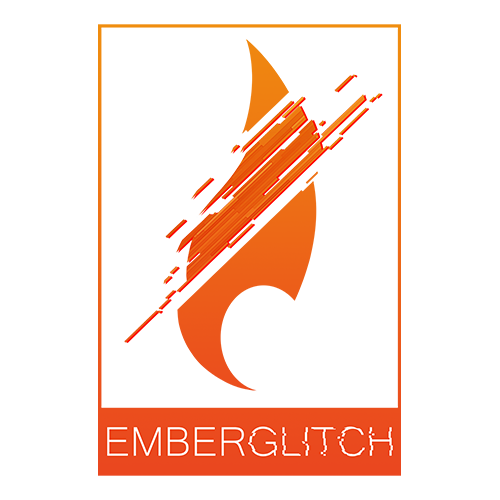
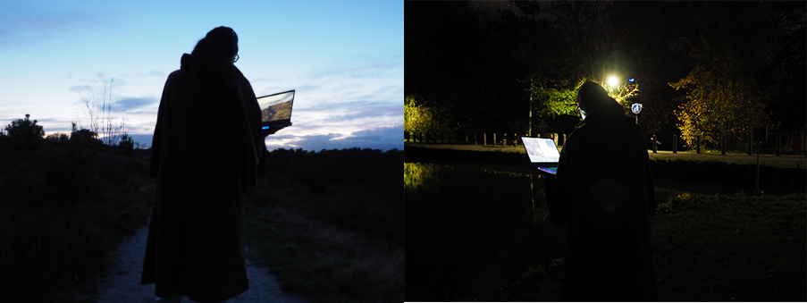
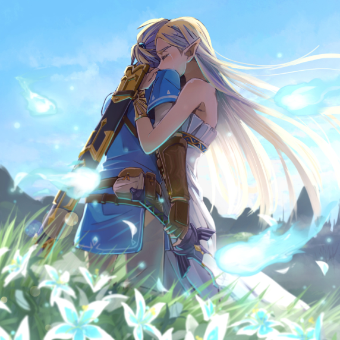

The Making of a Masterpiece
The Making of a Masterpiece
Het is 17 maart 2017, Marvin van Meegen is al ondertussen 27 uur wakker en hij gaat nog lang niet slapen! Waarom vraagt u? Nou, NieR:Automata, een nieuwe open-world adventure game is zonet uitgekomen en Marvin kan nu al geen afscheid meer nemen. Hij blijft door en doorgaan over hoe “geweldig” de soundtrack is en hoe “wonderschoon” de graphics en playermodels zijn. Hoe heeft deze game dat nou eigenlijk gedaan? Wat heeft ervoor gezorgd dat Marvin zich nu heeft ziekgemeld voor school en werk?
Marvin laat ons meerdere dingen zien hier, maar het belangrijkste wat we hieruit krijgen, is dat meerdere aspecten samenkomen om een goed eindproduct te maken. Maar hoe zorgen deze aspecten er nou voor dat mensen terug blijven komen? Er worden al snel onderdelen genoemd zoals de soundtrack of de graphics, maar hoe hebben deze onderdelen er nou voor gezorgd dat games zo mainstream zijn geworden en momenteel zoveel impact hebben? Al deze onderwerpen zullen benoemd worden en wij gaan samen kijken hoe al deze onderdelen nou een masterpiece maken.
The First Cutscene
Elk verhaal begint bij de basics en hetzelfde geld voor ons masterpiece, bij het maken van een game komen multidisciplinaire teams kijken, maar multidisciplinariteit wat is dat eigenlijk?
Heel eenvoudig, multidisciplinariteit betekent dat verschillende disciplines samenkomen voor een gezamenlijk eindproduct. Maar wat betekent dit nou voor ons masterpiece? Onze games?
De ontwikkeling van een goede gamer doorloopt exact dezelfde stappen als de ontwikkeling van elk goed design. Dit zijn de drie ontwerp niveaus, namelijk: Het artefact, de praxis en de betekenis (Kennisclips DR, Buchanan, 2021). Het artefact is het product zelf, in ons geval de game, dan moet je denken aan onderdelen als wat de eigenschappen van de game zijn.
De praxis is hoe het product gebruikt wordt in de praktijk, dus hoe willen we dat onze game gespeeld wordt. De betekenis is hoe je wilt dat je product gezien wordt of welke link de consumenten eraan geven. Wij gebruiken de betekenis om te kijken wat de consument belangrijk vindt in een game om hierop de game te baseren.

Maar hoe ziet dit dan nou in een game uit? Het ESF (Europees Sociaal Fonds) heeft hier een goed artikel voor dat gaat over de structuur van games. Volgens het ESF heeft een game twee onderdelen nodig, namelijk: “Een game bestaat uit regels (rules) en mechanics. De regels van een spel zijn meestal voor een speler duidelijk of worden gaandeweg aan de speler aangeleerd. De core mechanics, later uitvoeriger besproken, zijn gamemechanics die het meest invloed hebben op wat er gebeurt in het spel. Het heeft invloed op bijna alle elementen in de game.” (ESF, 2014)
Wat het ESF hier zegt slaat eigenlijk meteen de hamer op de nagel, als je namelijk naar huidige topsellers in de game industrie, dan zul je al snel zien dat deze allemaal deze twee onderdelen gebruiken en naleven. In het masterpiece van eerst, NieR:Automata, is dit ook het geval, maar zij geven er net een beetje een eigen draai aan. Je start namelijk met de normale regels en mechanics die je in het begin leert, maar bij bijna elk nieuw gebied of stuk van het verhaal komen er weer nieuwe regels of mechanics bij kijken. Hierdoor maken zij gebruik van de twee onderdelen maar ze zorgen ervoor dat je nooit klaar bent met leren.
World-Building
Wat zijn nou de onderdelen die echt van belang zijn voor een goede game en in ons geval, ons masterpiece? Wat gaan we hiervoor nodig hebben?
Om nu weer terug te vallen naar het maken van een goed masterpiece, gaan we eerst kijken hoe we de drie onderwerpen van eerst nou moeten gebruiken. We weten namelijk dat er regels en mechanics bij komen kijken, maar dit is niet alles wat daarbij hoort.
Een goed design en dus ook een goede game komen namelijk tot stand wanneer de drie onderwerpen samen komen in een product. Wat hoort er dan nou eigenlijk in deze onderwerpen te komen? Dat is waar we weer terugvallen op de multidisciplinariteit (Kennisclips DR, 2021), om het artefact te maken zijn er namelijk meerdere disciplines nodig. We kijken dan naar disciplines zoals level design, audiodesign, gameplay design, story design en nog veel meer. Dit is echter vaak niet het enige wat erbij komt kijken want er zijn ook nog andere uitdagingen zoals doelgerichte deskundigen.

Een goed voorbeeld hiervan komt uit een artikel over Alternate Reality Games die worden ingezet voor educatieve doelen van Renée Filius. Filius heeft het hier over de ARG’s om informatie over te brengen aan studenten en nieuwe informatiebronnen hiermee te creëren. Er komt ook hier weer genoeg bij kijken, namelijk: “Naast ontwerpers zijn onderwijskundigen nodig om te zorgen dat de inhoud van de ARG aansluit bij de leerdoelen en voorkennis van de studenten: Het niveau moet precies hoog genoeg zijn om uitdagend te zijn, zonder dat de studenten verveeld of juist gefrustreerd worden.” (Filius, 2009)
Elk soort game en elk soort design heeft dus zijn eigen waardes en ook zijn eigen benodigheden. Bij dit soort educatieve games is het dus vooral belangrijk dat je de leerdoelen duidelijk aan de game verbindt zonder dat je deze te moeilijk of te makkelijk maakt.
The Main Story
Er is een vraag die altijd opnieuw en opnieuw gesteld blijft worden, de vraag: “Waarom hebben games zo veel invloed op onze huidige generaties, en welke verschillende onderdelen zorgen hiervoor?” Hiervoor schakel ik een player 2 in, want de player 2 genaamd Simon van Strijp, een van de drie eigenaren van de game studio Ember Glitch, weet hier net iets meer over.
Simon is een mede-eigenaar van de game studio Ember Glitch die was opgericht in 2017 net nadat zijn vrienden en hij waren afgestudeerd. De studio is tot stand gekomen nadat zij hun eerste game hadden gemaakt, namelijk een topografie game om kinderen te helpen topografie te leren, hierna wilden zij meer maken waardoor ze dan ook de studio hebben opgericht.
“Games zijn superduur om te maken”, “Niet elke studio van 5 man heeft een audio designer”, “Tijd is budget”, in persoonlijke communicatie gaf Van Strijp (persoonlijke communicatie, 19 oktober 2021) onder andere deze drie zaken aan en alles wat hij hier noemt zijn cruciale gedachtes voor het maken van een game. Het belangrijkste wat je hieruit kunt halen is dat een goede game veel tijd en geld kost. Vroeger zagen games namelijk heel anders uit dan nu, daarom kon je vroeger dus ook veel makkelijker een goede game maken met minder man en een kleiner budget, want er was niet al te veel waar aan je moest denken.
Momenteel als je een goede game wilt maken dan heb je verschillende mensen nodig die goed zijn in verschillende disciplines. Je hebt namelijk een goede audio designer nodig maar ondertussen heb je ook iemand nodig die een mooie wereld kan maken, maar vergeet niet ook te denken aan een persoon die een goed verhaal kan maken voor je game!
Juist doordat games zoveel verschillende disciplines gebruiken en alles mooi samen laten komen, is precies de reden waardoor deze ook zoveel invloed hebben. Met huidige games is het net alsof je naar een film gaat, je komt naar binnen met bepaalde verwachtingen, maar tijdens het hele proces zie, hoor en beleef je dingen die je nooit had verwacht en doordat alles zo mooi samenwerkt wordt het opgeleverd op een zilveren plateau.

Test Runs
De laatste phases van ons masterpiece zijn begonnen, maar deze zijn nog even belangrijk, want hoe wordt ons eindproduct beïnvloed door de kwaliteit van het multidisciplinaire team erachter?
Het eindproduct zal altijd door meerdere onderdelen beïnvloed worden, namelijk zowel het team erachter maar ook door de consument. Hiervoor kunnen wij refereren naar SCOT (Social Construction of Technology (Kennisclips DR, W. Bijker, 2021)), het SCOT zegt namelijk dat technologie geen natuurkracht is en dat het dus niet vanzelf tot stand komt, het is een product van de huidige cultuur. De mensen bepalen zelf welke technologie toegelaten worden in de maatschappij en ook welke niet, dit geld dus hetzelfde ook voor games. De consument kiest welke genres en wat voor een soort type games populair zijn, het is daarna aan de designers om met deze flow mee te gaan, of juist er tegenin proberen te gaan.
Een artikel over computerwetenschap en technologie heeft nog een ander kritieke factor gevonden voor het succes van onze masterpiece, namelijk: “More specifically, team configuration and management are considered critical to the success of any game development project. Game development requires intensive team management.” (Springer, 2016)
Het samenstellen van je team is een van de eerste stappen die je doorgaat, maar dit is ook meteen een van de belangrijkste stappen. Zoals Springer vermeldt, game development heeft intensieve team management nodig want elk individu is beter in bepaalde vlakken. Wanneer je een team wil hebben voor een horror game, dan wil je kijken naar teamleden die van het genre afweten maar vooral leden die bezig zijn met sounddesign en worlddesign. Bij een horrorgame zijn de grootste factors namelijk hoe “eng” de muziek en geluiden zijn en hoe de wereld om hen heen hieraan meespeelt en uitziet.
“Modern game development requires the effort of a team of skilled professionals to integrate multimedia content and complex computer software.” (Maxim, B. R., Ridgway, B., 2007) Door dit wetenschappelijk artikel over game development komen we te weten dat een goede moderne game gemaakt wordt door teams die content kunnen integreren maar die ook kunnen werken met complexe programma’s. Dit valt ook goed terug te zien want alle programma’s voor alle soorten development zijn de laatste paar jaar zo veel verbeterd. Kijk bijvoorbeeld naar de adobe programma’s, deze zijn vrij toegankelijk en het zijn hele handige tools om van alles te maken. Nu zijn game developers wel al iets verder dan dat zij hun games in illustrator en photoshop gaan maken, toch kunnen wij het hierdoor een beetje na creëren.
The Endproduct, The Masterpiece
Een goede game, oftewel een goed masterpiece, kunnen wij aanschouwen als een multidisciplinair design door al deze verschillende aspecten die samen komen. Aan het eind van de dag, als de consument de game speelt, dan krijg deze op meerdere manieren entertainment en informatie en dit was nooit gelukt als alles apart was geweest.
Nu de final boss is verslagen staat er niet meer veel te doen, we kunnen zelf nog reflecteren wat wij van het hele proces vonden en wat jullie als lezers van deze tekst ervaarden. Zelf kies ik er toch echt voor om NieR:Automata nog een keer op te starten, om te kijken of ik misschien toch niet een ander einde had kunnen krijgen, voor mij in deze tekst, was dit echter wel het einde.
Daar zijn we dan, eindelijk aan het einde met een veel beter blik op ons uiteindelijke masterpiece. Nu dat we het hebben gehad over de “behind-the-scenes” van game design en de betekenissen van meerdere aspecten gehad hebben, is het tijd om de final boss te verslaan en hier een einde aan te maken.
Een goede game heeft dus echt heel veel verschillende onderdelen nodig zoals de verschillende niveaus maar ook de SCOT. Al deze onderdelen spelen een rol in het groter geheel maar de belangrijkste hierin is dan toch echt de verschillende disciplines.
De reden waarom Marvin nu nog altijd achter de pc zit en er ook nog een tijd achter gaat blijven, komt allemaal door dit multidisciplinaire principe. Verschillende disciplines van verschillende professionals komen samen in een eindproduct, waardoor alle goede onderdelen elkaar complimenteren.